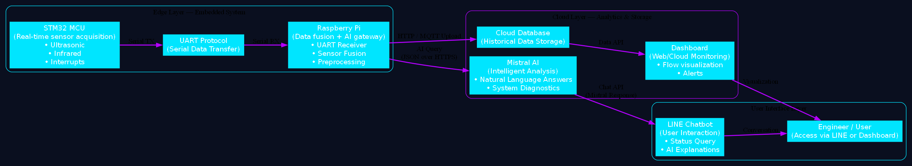

Flow AI integrates embedded real-time processing and cloud-ready intelligence. The STM32 collects precise sensor data, ensuring accurate readings through low-level interrupts, while the Raspberry Pi manages communication, data fusion, and AI pipelines for analytics dashboards.
STM32 → UART → Raspberry Pi → Cloud Dashboard → AI Model
System diagram should be placed in assets/imgs/architecture.png

Access our technical details and demo through the LINE chatbot below.
Contact via LINE